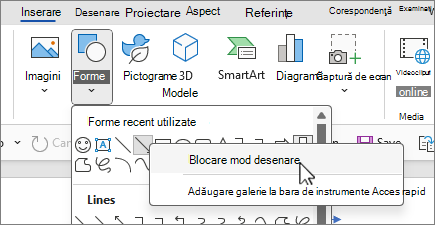

Bine ați venit într-un loc unde puteți învăța funcționalitățile de bază din Microsoft Word!
- Mergi la tab-ul „Insert” (Inserare).
- Click pe „Shapes” (Forme).
- Alege forma dorită și deseneaz-o în document.
Formele (săgeți, cercuri, casete de text etc.) sunt folosite pentru a crea scheme, organigrame sau evidențieri. Le poți personaliza complet cu culori, umbre și poziționare în pagină.
